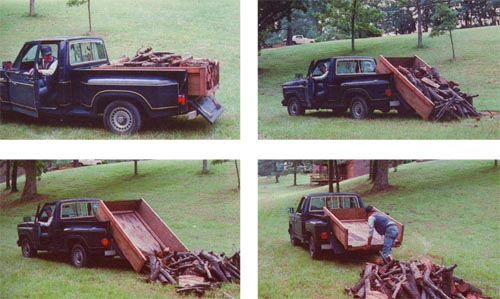

Turn Your Pickup Truck Into A Dump Truck
Build a $100 (or less) alternative to the $1,000 (or more) hydraulically operated dump truck systems. A secondary wood bed and hydraulics allow dumping from a converted truck.
By James H.Miller
November/December 1983
Build a $100 (or less) alternative to the $1, 000 (or more) hydraulically operated dump systems.
Â
Having owned a pickup truck for most of my adult life, I've encountered many situations that caused me to wish I had some way -other than with hand or shovel-to unload the various materials I've hauled in the vehicle. Unfortunately, the only alternatives to manual labor that I'd ever seen, heard of, or read about were hydraulic dump-bed conversions . . . which cost a thousand dollars or more, including installation. And, when it came right down to it, I knew my own need for that sort of time and laborsaving device was neither frequent enough nor severe enough to justify much expense. So I continued to shovel and toss, thinking--as I'd bend and lift, bend and lift --"There's just got to be a way to build an affordable dump system."
THE LIGHT DAWNS
Well, late one afternoon-as I was laboriously heaving big blocks of oak firewood out of my truck-an idea struck me. (Actually, the inspiration took the form of a Picture in my mind, kind of like the light bulbs that flash on in cartoon characters' heads.) I visualized a movable insert (or liner) that would fit inside the truck bed . . . which would be mounted on rollers to permit forward and backward movement ... and would be secured to the bed with cables that'd allow it to roll back far enough for the rear end to drop over the edge of the bed to the ground.
I figured that any dumpable materials could be loaded in such a liner, and that a securely closed tailgate would prevent any movement to the rear during transit. On the other hand, with the tailgate lowered, unloading could be accomplished simply by backing the truck up and applying the brakes. In theory, this procedure would cause the liner to roll back out of the bed until the center of gravity moved to the rear, causing that end to drop down automatically and dump the cargo. If the truck were then driven forward to clear the dumped material (with the tilted liner being drawn along by the cables), the bay could be lifted and pushed back into the truck bed by hand!
I could see it all so clearly that I just knew that the plan would work, and I could hardly wait to put my system together and try it. However, I still didn't know exactly what materials I'd need to transform my idea into reality, but I did know that my budget wouldn't allow the purchase of a lot of costly supplies. And, unfortunately, my "inspired vision", at that point, relied on such "luxury" components as a metal liner, conveyor-type rollers that would reach all the way across the bed, and expensive steel cables.
ENLIGHTENMENT STRIKES TWICE
Then, for the second time in 15 minutes (and after almost 40 years of total darkness), the light came on in my mind again. I suddenly envisioned a way to start my project the next morning . . . and to dump something that same afternoon (if the project turned out the way I hoped-and thought it would).
What I'd have to do, I figured, was build a wooden box for the liner, mount it on casters instead of long rollers, and substitute heavy duty nylon straps for the cables. I had enough plywood left over from previous jobs to build the box, and there was a nylon tow strap stored behind the seat of the truck. Why, I probably even had some old furniture-type casters stashed in a drawer somewhere!
DEVELOPING THE DOWN-TO-EARTH DEVICE
Now I wish I could say that I got up the next morning and built my dump bed . . . and that it worked so well that I used it happily ever after. This isn't a fairy tale, though, and my two mental "flashes" were a tad shy on construction details.
I did manage to develop the plan into an inexpensive load-dumping system . . . but I had to invest all of my spare time for the next several days, as well as a few dollars for some store-bought hardware, before I could tilt anything out of my truck.
I didn't have a bit of trouble building the liner. To do so, I simply constructed a plywood box (with a floor, a front end, and side walls) that'd fit
between the fender wells in the truck's bed . . . reinforcing its bottom and all of its inside corners with 2 X 4's.
However, I soon discovered that getting the box to dump once I'd put it together was quite another story . . . one that would take up a lot of space, bore the reader, and certainly embarrass this writer. Suffice it to say that, after trying far too many things that didn't work, I finally obtained the right type of casters (2-1/2 "-diameter ball-bearing units with hard rubber wheels) . . . found the correct places to position them (on the box and the truck bed) . . . and figured out just how and where to attach the snaps. Not only has my nonhydraulic dump box performed well in the long-bed pickup in which I originally installed it, but similar units have proved equally effective (and useful) in a foreign-made mini truck and in my current short-bed step side. I used as much recycled material as I could when building each of the boxes, but the total cost of such a system wouldn't run more than a hundred dollars, even if everything were to be purchased new.
A FEW DRAWBACKS . . .
Of course, my setup does have some limitations. In a step side bed, for instance, it leaves a little bit of "wasted" space in front of and behind the fender wells. However, I haven't found this to be much of a problem, because the box holds enough firewood, topsoil, and so on to meet (or, in some cases, to exceed) the truck's rated load capacity. (On the few occasions that I've used it for really lightweight materials, I've simply installed some temporary sideboards to increase the capacity of the box.)
In addition, to accommodate my system, a truck must have a tailgate/bumper combination that allows the gate to drop below the level of the bed. (I had to replace the factory-installed bumper on my present pickup.) But my homemade dumper's greatest disadvantage (as compared with conventional hydraulic systems) is that it will work well only on fairly level ground. Even then, its correct operation requires careful coordination of backing velocity and brake pressure. Too slow a speed, coupled with a soft touch on the brakes, prevents the box from rolling back far enough to dump . . . while excessive speed, coupled with a quick stop, might cause it to roll hard and fast enough to break a strap.
... BUT WITH PLENTY OF REWARDS
Despite these small drawbacks, though, I was pretty proud of myself when I exhibited my "Pickup Truck Dump Box" at the Spring 1983 New Products and Inventions EXPO (in Nashville, Tennessee), where it was judged the "Best New Invention". Still, I'd have to say that my greatest satisfaction has been unloading many, many truckfuls of firewood, dirt, gravel, manure, sawdust, and trash (and probably a number of other things I can't recall just now) merely by backing up my truck and applying the brakes!
 PHOTOS BY THE AUTHOR ABOVE: The truck's tailgate/bumper combination must alloe the gate to drop below the level of the bed in order to operate. BELOW: The author/inventor's ""dump box"" in action. A light touch on the brakes activate the system and the box can be pushed. |
 |
|